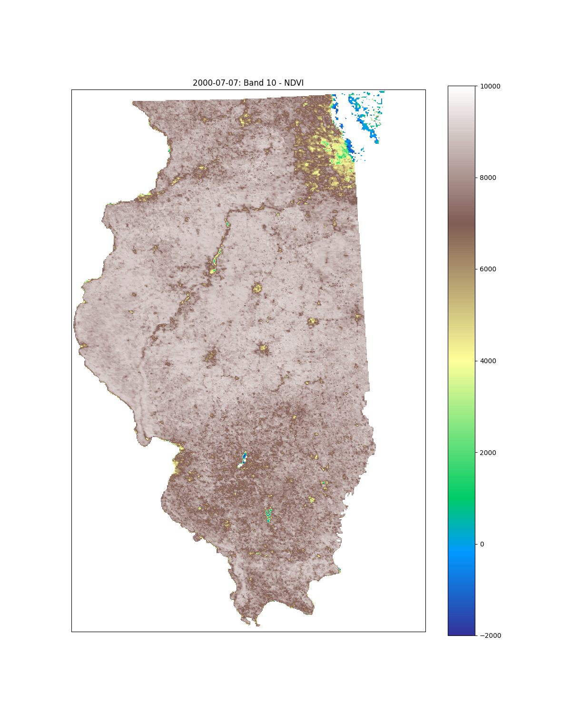

Data Collection
This page describes the data used in the analysis, including a description of the original sources of the data and a data dictionary for the data used.

Data Source and Processing Summary
- Data Acquisition: All data was obtained from Google Earth Engine using their Python API.
- Spatial Extent: The dataset covers the entire state of Illinois, with the boundary defined by the ‘TIGER/2018/States’ census dataset.
- Temporal Extent: The dataset spans from February 18th, 2000 to December 31st, 2023. It is organized into weekly averages, resulting in 1244 datasets (originally 1245, but week 71 was removed due to missing FPAR data).
- Temporal Aggregation: Daymet data, originally daily, was averaged to weekly values. MODIS composite data was downscaled.
- Spatial Resampling: MODIS ET and FPAR indices, originally at 500m resolution, were downsampled to 1km resolution using bilinear interpolation to match the resolution of other datasets.
- Land Cover Data: Land cover data is from the 2011 NASA GFSAD product. It was reclassified into three categories: non-cropland, irrigated cropland, and rainfed cropland.
General Metadata Summary
- Geographic Coverage: Illinois, USA
- Coordinate System: EPSG:3347 (Canada Lambert Conformal Conic)
- Spatial Resolution: 1 km x 1 km
- Temporal Coverage: February 18th, 2000 to December 31st, 2023
- Temporal Resolution: Weekly
- Data Sources:
- Daymet v4 (daily meteorology, averaged to weekly)
- MODIS (vegetation indices, ET, FPAR, LAI; composites downscaled spatially, upscaled temporally)
- GFSAD (2011 land cover, reclassified)
- Rendered GeoTIFF Dimensions:
- Width: 431 pixels
- Height: 660 pixels
- Bands: 16
Band Explanation
| Band Name | Description | Units | Data Type | NoData Value |
|---|---|---|---|---|
| crop | Land cover type (1: non-cropland, 2: irrigated cropland, 3: rainfed cropland) | Category | float32 | None |
| dayl | Daylength | seconds | float32 | None |
| prcp | Precipitation | mm/day | float32 | None |
| srad | Downward shortwave radiation at the surface | W/m^2 | float32 | None |
| swe | Snow water equivalent | kg/m^2 | float32 | None |
| tmax | Daily maximum 2-meter air temperature | degrees C | float32 | None |
| tmin | Daily minimum 2-meter air temperature | degrees C | float32 | None |
| vp | Water vapor pressure | Pa | float32 | None |
| EVI | Enhanced Vegetation Index | unitless | float32 | None |
| NDVI | Normalized Difference Vegetation Index | unitless | float32 | None |
| ET | Evapotranspiration | mm/day | float32 | None |
| LE | Latent heat flux | W/m^2 | float32 | None |
| PET | Potential evapotranspiration | mm/day | float32 | None |
| PLE | Potential latent heat flux | W/m^2 | float32 | None |
| FPAR | Fraction of Photosynthetically Active Radiation | unitless | float32 | None |
| LAI | Leaf Area Index | m2/m2 | float32 | None |
Types of Vegetation Metrics
Evapotranspiration (ET): Measures the total water loss from soil and plants; higher ET indicates active plant growth and sufficient water availability. Over 25 years, an overall decrease in ET due to climate change could indicate reduced plant activity or increased water stress.
Fraction of Photosynthetically Active Radiation (FPAR): Represents the fraction of sunlight absorbed by vegetation for photosynthesis; higher FPAR denotes healthier, more productive crops. Over 25 years, a declining FPAR trend could indicate an overall reduction in crop canopy density.
Leaf Area Index (LAI): Quantifies the total leaf area per unit ground area; higher LAI reflects denser foliage and robust plant growth. Over 25 years, an overall decrease in LAI over time could point to diminished vegetation cover or stunted growth.
Enhanced Vegetation Index (EVI): An index that enhances vegetation signals by reducing atmospheric and soil background noise; higher EVI values correspond to healthier vegetation. Over 25 years, a downward trend in EVI might indicate declining vegetation vigor.
Normalized Difference Vegetation Index (NDVI): Assesses vegetation greenness by comparing red and near-infrared reflectance; higher NDVI values signify healthier, greener vegetation. Over 25 years, a decrease in NDVI over 25 years could suggest reduced vegetation health or coverage.
NDVI and EVI capture vegetation greenness and vigor, offering a direct assessment of plant health, whereas LAI, FPAR, and ET provide information on structural and functional aspects of vegetation. The scientific basis for preferring NDVI/EVI lies in their sensitivity to chlorophyll content and ability to detect changes in vegetation health more directly. The general hypothesis is: if the climate in 2000 was more favorable for crops than in 2024, we would expect to see higher values of ET, FPAR, LAI, EVI, and NDVI in 2000, reflecting more vigorous plant growth, denser foliage, and healthier vegetation due to optimal growing conditions.